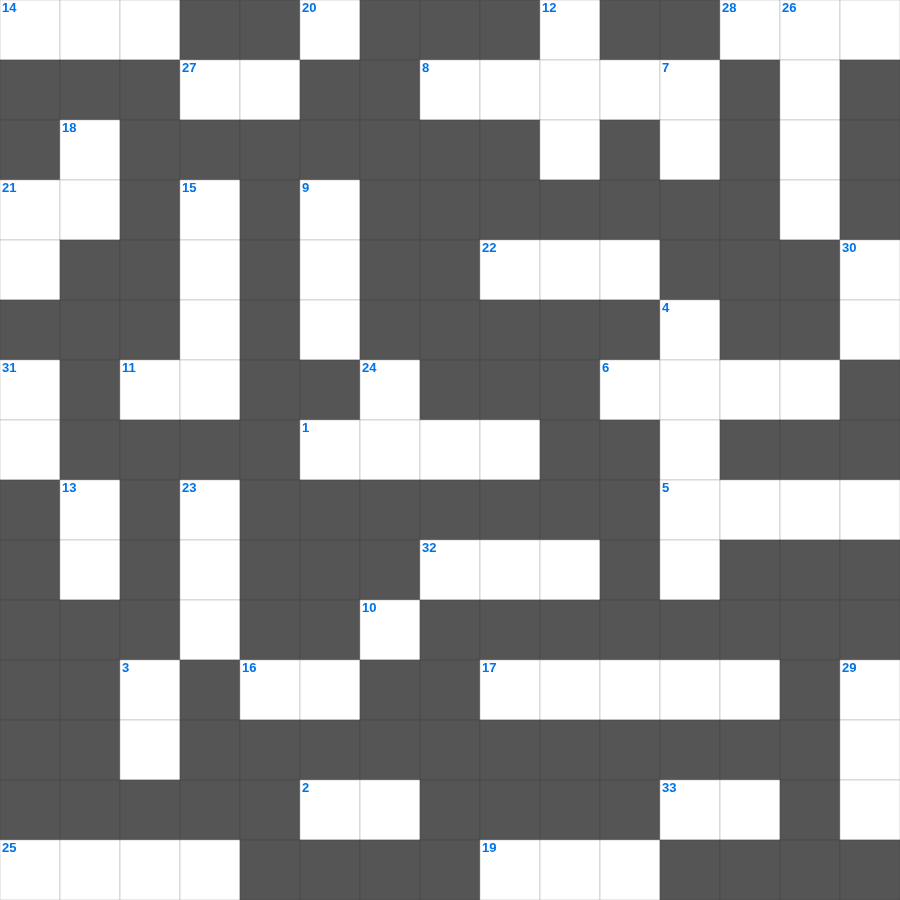

사사기: 큰 용사 기드온
📌 서비스 정의
십자가로세로는 교회 주보와 주일학교에서 사용할 수 있는 성경 기반 가로세로 퍼즐 서비스입니다. 성경 인물, 사건, 핵심 구절을 바탕으로 제작되었습니다. 온라인 풀이 및 인쇄 기능을 제공합니다.
사사기의 말씀을 퀴즈로 배우는 사사기 성경 퀴즈 문제입니다. 가로 힌트와 세로 힌트를 보고 35개의 단어를 맞춰보세요. 인쇄도 가능하고 정답 확인도 바로 되니 소그룹 모임이나 가정 예배 시간에도 활용하실 수 있습니다.

📝 가로 힌트
1. 오순절 다락방에서 성령이 임한 사건
2. 땅 끝까지 이르러 내 이것이 되리라
3. 가인이 아벨을 죽인 도구(전통적 해석)
5. 믿음이 없이는 하나님을 이것하게 못하나니
6. 예수님이 나귀 새끼를 타고 입성하신 곳
8. 솔로몬의 재판에서 가짜 엄마를 가려낸 방법
10. 분향단에서 피우는 거룩한 것
11. 지혜의 말씀, 지식의 말씀, 이것
14. 가나 혼인잔치에서 물이 이것이 된 기적
16. 호흡이 있는 자마다 찬양하라 이것으로
17. 아브라함의 고향
19. 모세의 누나
20. 오직 정의를 이것 같이 흐르게 할지어다
21. 아기 예수님이 누우셨던 곳
22. 언어가 혼잡하게 된 곳
25. 기름 부음 받은 자
27. 야곱의 아들 수
28. 하나님께 노래로 영광 돌리는 팀
32. 베드로가 하루에 전도하여 세례받은 사람 수
33. 다윗이 연주하던 악기
📝 세로 힌트
3. 십계명이 새겨진 것
4. 엘리야에게 떡을 대접한 사르밧 과자
7. 여호와 이것: 치료하시는 하나님
9. 안드레의 형제
12. 매우 작은 씨앗의 대명사
13. 예수님이 구름을 타고 하늘로 올라가심
15. 마태 마가 누가 다음 복음서
18. 나는 마음이 이것하고 겸손하니
21. 주 예수를 믿으라 그리하면 너와 네 집이 이것을 받으리라
23. 에덴 동산에서 아담과 하와가 쫓겨난 일
24. 열매를 맺게 하시는 분
26. 양의 뿔로 만든 나팔
29. 죄를 속하기 위해 드리는 제사
30. 예배의 시작을 알리는 종소리나 기도
31. 하나님의 뜻을 전달하는 것
🧑🏫 교회 교육 자료 활용
이 퍼즐은 주일학교 교재 추천 자료로 활용할 수 있고, 주일학교 주보에 넣기 좋은 분량으로 구성되어 있습니다. 수업용 주일학교 교안에 활동지로 붙이거나, 예배 후 복습용 주일학교 공과교재로 바로 사용할 수 있습니다.
🏷️ 키워드
사사기 성경 퀴즈 문제, 사사기, 십자가로세로, 성경퀴즈, 말씀퀴즈, 가로세로퍼즐, 주일학교 교재 추천, 주일학교 주보, 주일학교 교안, 주일학교 공과교재